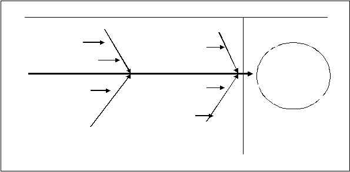

|

Page 55
Guide Questions:
1.
What else can you gather from the Cause-and-Effect Diagram created for ABC? How did you get
to this conclusion?
2.
Are there other interventions that you can recommend to help ABC address the instances of
incivility within their organization? What is the rationale behind your choices?
3.
Can forgiveness have a role in managing incivility at ABC? If yes, how do you propose the
concept of forgiveness be used?
Interperson
al Clashes
among
Staffers
Cause
Effect
Job Stress
No Clear Leader
No Clear Framework on
How Healthcare Missions
Should Proceed
Staffers Using the
Organization’s Activities for
their Own PR Campaign
Compassion Fatigue
Poor Organization at
the Mission Field
No Policy on Who
Should Take Charge
No Procedure Manual on
How Missions Should
Proceed
No Prescribed Protocol
on How PR Should Be
Handled
Members’ Self-
Interest
|